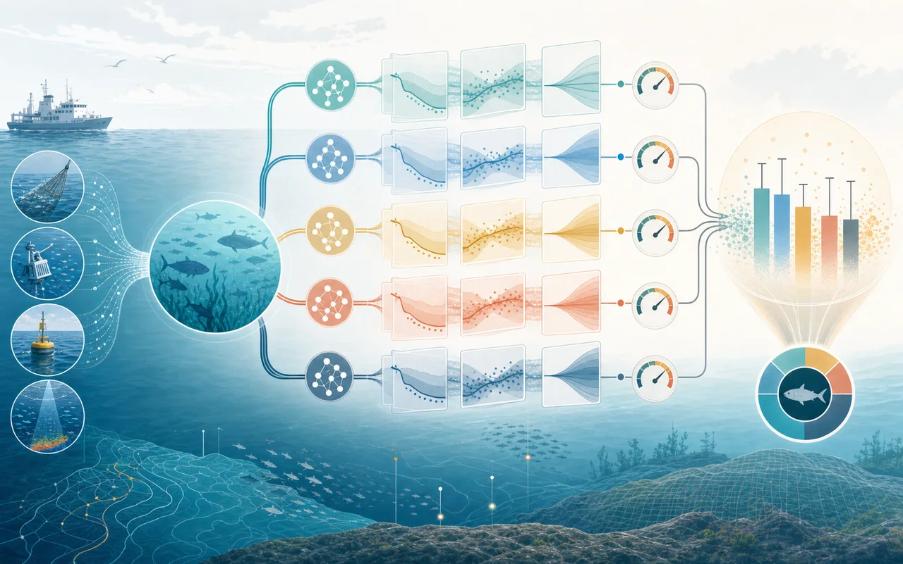
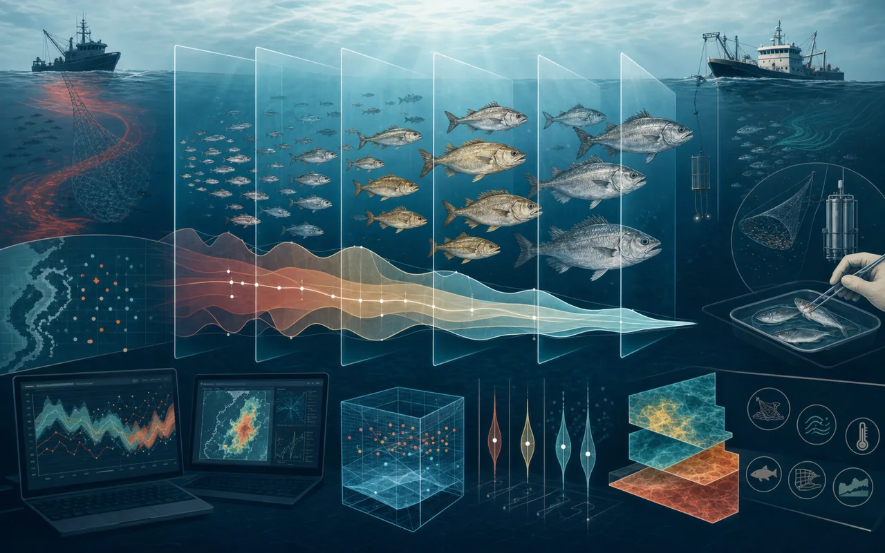
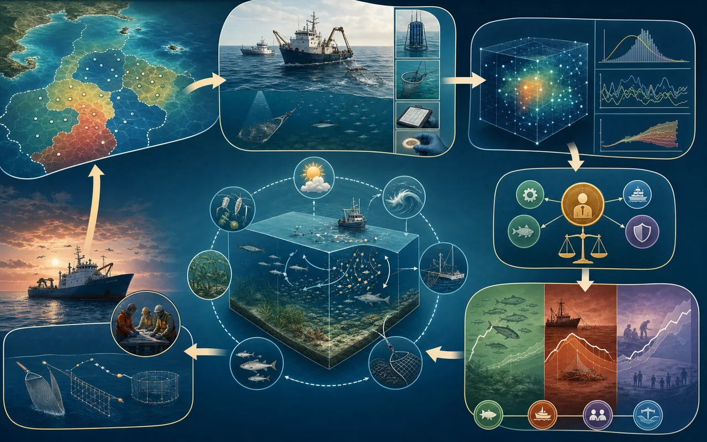
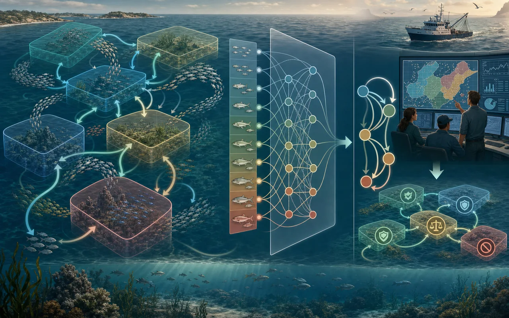
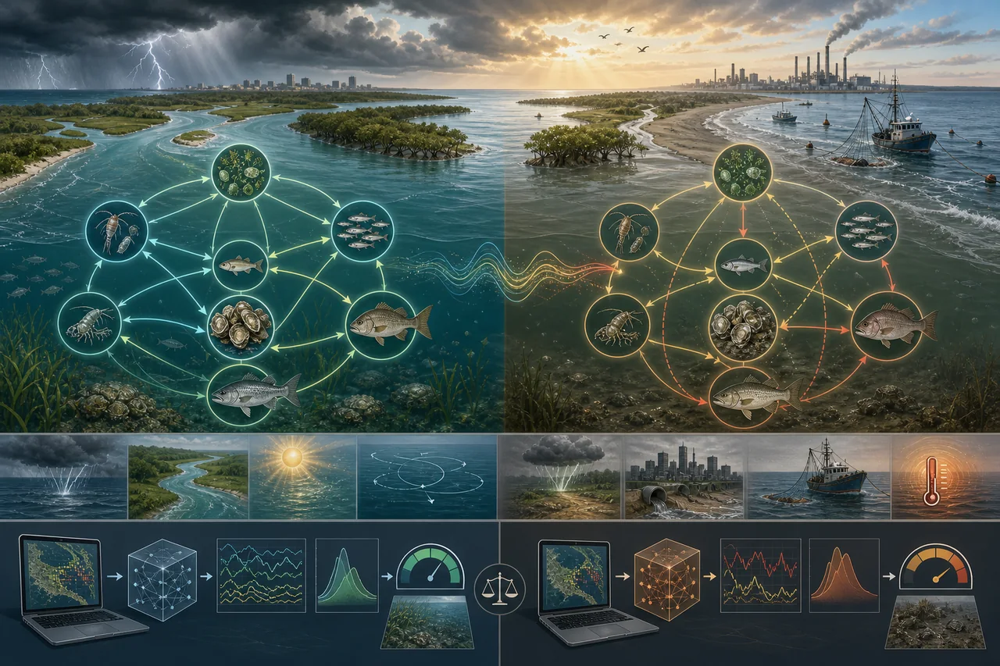
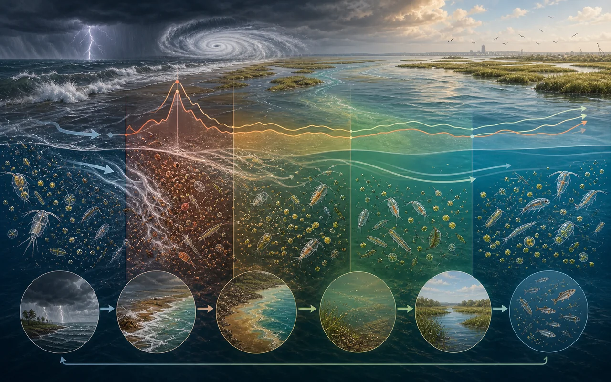
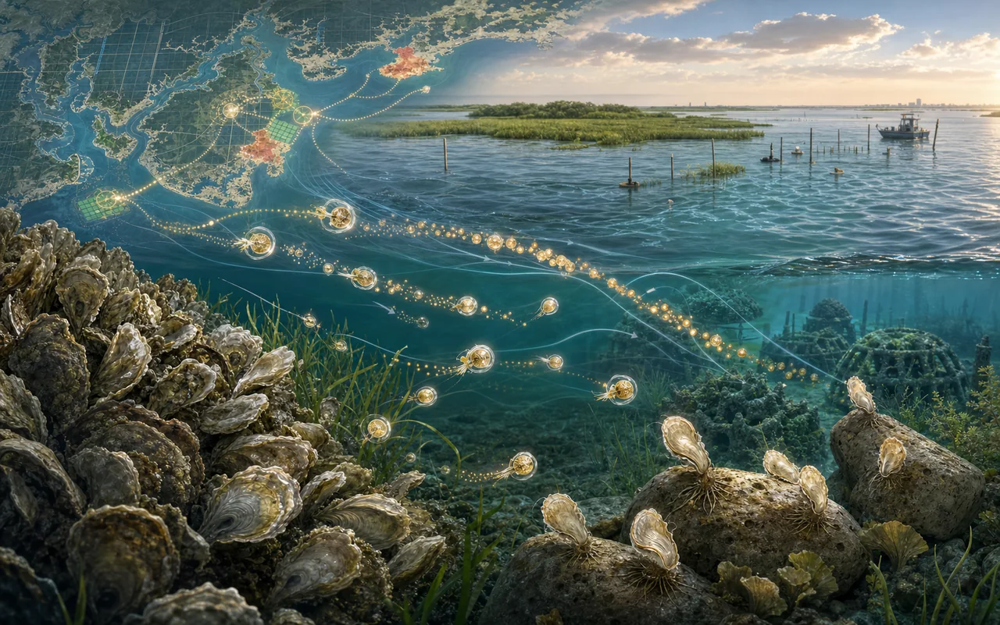
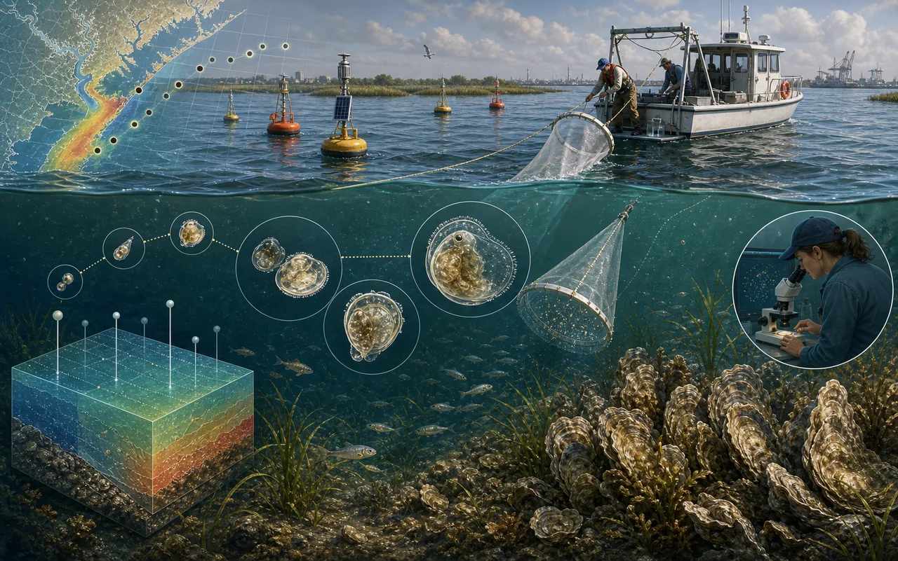
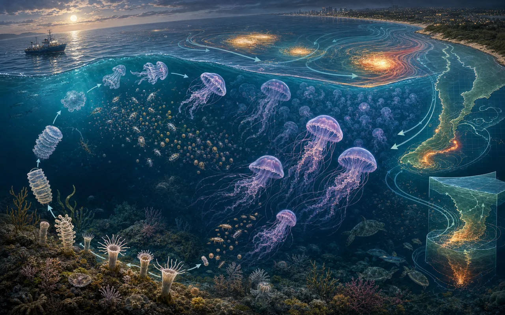

Original visual
Research topics
Research Portfolio
These themes group my publications by scientific question, method, and management application. Each topic includes publication citations, DOI links, and concise conclusions drawn from the papers listed in my CV.


Stock Assessment Methods
This work tests how age-structured state-space assessment models behave when process error, observation error, model reliability, and model selection diagnostics interact.
Li, C., Deroba, J. J., Miller, T. J., Legault, C. M., & Perretti, C. T. (2024). An evaluation of common stock assessment diagnostic tools for choosing among state-space models with multiple random effects processes. Fisheries Research, 273, 106968.
DOI: 10.1016/j.fishres.2024.106968Key point/conclusion: No single diagnostic reliably identified the correct process-error structure. Misattributing natural mortality process error produced large bias, so when diagnostics are uncertain, a more flexible state-space model can be safer than excluding a needed random effect.
Miller, T. J., Britten, G., Brooks, E. N., Fay, G., Hansell, A., Legault, C. M., Li, C., Muffley, B., Stock, B. C., & Wiedenmann, J. (2026). An investigation of factors affecting inferences from and reliability of state-space age-structured assessment models. Canadian Journal of Fisheries and Aquatic Sciences.
DOI: 10.1139/cjfas-2025-0149Key point/conclusion: Model reliability improved when observation error was lower, fishing pressure had stronger contrast, and median natural mortality was known. The paper also showed that log-likelihood gradient magnitude alone is not a dependable convergence screen.


Management Strategy Evaluation
These papers ask when spatially aggregated, spatially implicit, or spatially explicit assessment and management approaches are sufficient for populations with movement and regional structure.
Li, C., Deroba, J. J., Goethel, D. R., Berger, A. M., Schueller, A. M., Langseth, B. J., Hanselman, D. H., Liljestrand, E. M., & Miller, T. J. (2026). SPASAM-MSE: a generalized spatial management strategy evaluation framework for exploring the impacts of spatial structure on stock assessments and management outcomes. Canadian Journal of Fisheries and Aquatic Sciences, 83, 1-22.
DOI: 10.1139/cjfas-2025-0283Key point/conclusion: SPASAM-MSE provides a generalized simulation framework for testing how spatial population structure, data collection, assessment design, harvest control rules, and catch apportionment affect management outcomes.
Li, C., Deroba, J. J., Berger, A. M., Langseth, B. J., Goethel, D. R., Schueller, A. M., & Miller, T. J. (2026). Random effects on numbers-at-age transitions implicitly account for movement dynamics and improve stock assessment and management. Canadian Journal of Fisheries and Aquatic Sciences, 83, 1-18.
DOI: 10.1139/cjfas-2025-0092Key point/conclusion: Numbers-at-age transition random effects can act as a practical proxy for unmodeled movement and improve assessment and management performance when movement is moderate, although benefits decline when movement is high.

Community Ecology
This topic uses comparative ecosystem modeling to understand how subtropical estuaries respond to external perturbations and how stability differs among connected biological groups.
Li, C., & Liu, H. (2023). Comparative ecosystem modeling of dynamics and stability of subtropical estuaries under external perturbations in the Gulf of Mexico. ICES Journal of Marine Science, 80(5), 1303-1318.
DOI: 10.1093/icesjms/fsad056Key point/conclusion: Comparative ecosystem modeling showed that subtropical estuaries can differ in their stability pathways and vulnerability to perturbations, providing a data-driven way to identify biological groups that transmit or dampen ecosystem change.

Disturbance Ecology
This work uses zooplankton observations and ecological indicators to evaluate how catastrophic hurricanes affect estuarine pelagic communities and how recovery differs across biological metrics.
Liu, H., Gilmartin, J., Li, C., & Li, K. (2021). Detection of time-varying pulsed event effects on estuarine pelagic communities with ecological indicators after catastrophic hurricanes. Ecological Indicators, 123, 107327.
DOI: 10.1016/j.ecolind.2020.107327Key point/conclusion: Ecological indicators detected acute hurricane-driven changes in estuarine pelagic communities, and abundance recovered faster than community structure, showing why multiple indicators are needed to interpret disturbance and recovery.


Estuarine Restoration
This research links oyster larval ecology, field observations, and individual-based bioenergetic modeling to restoration decisions in estuarine fisheries.
Li, C., & Liu, H. (2025). Modeling larval recruitment dynamics of eastern oysters with implications for restoration and management of oyster fisheries. Marine Ecology Progress Series, 756, 31-49.
DOI: 10.3354/meps14805Key point/conclusion: An individual-based bioenergetic model linked larval transport, settlement, and spatial recruitment patterns to restoration planning, helping identify where restoration actions can better align with natural recruitment dynamics.
Liu, H., Lin, B., Jensen, C., Alvarado-Bremer, J., Bi, H., Song, Z., Li, C., & Hu, X. (2025). Exploration of enigmatic pelagic larval oysters fostering estuarine restoration of oyster fisheries. Journal of Sea Research.
DOI: 10.1016/j.seares.2025.102628Key point/conclusion: Field sampling showed strong seasonal and spatial variation in oyster larval density and size structure, with salinity emerging as a key driver of larval distribution relevant to restoration timing and placement.

Bloom Dynamics
This work explores how a pelagic-benthic life cycle, physical transport, and environmental conditions combine to produce jellyfish blooms.
Li, C., & Liu, H. (2022). Exploring cosmopolitan jellyfish bloom dynamics and ecological implications in subtropical waters with mechanistic dynamic modeling. Journal of Marine Systems, 228, 103705.
DOI: 10.1016/j.jmarsys.2022.103705Key point/conclusion: A mechanistic model linking benthic and pelagic life stages showed that environmental conditions can trigger strobilation and bloom formation, with bloom hotspots emerging along the South Texas coast, East Louisiana shelf, and Mississippi Sound.